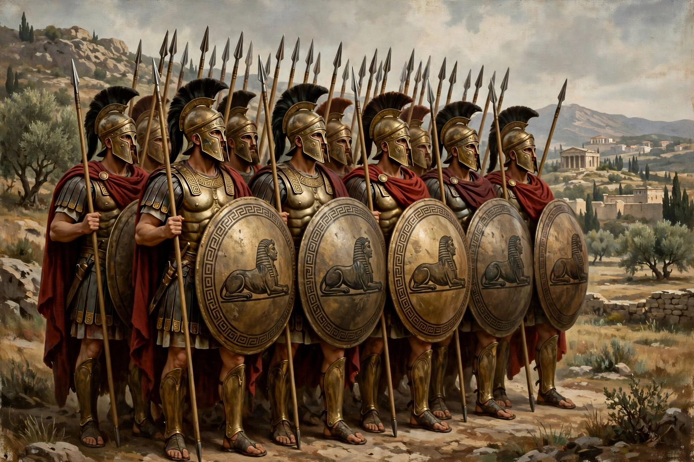

The Sacred Band of Thebes (Ancient Greek: Ἱερός Λόχος τῶν Θηβῶν) was an elite troop of Theban soldiers in the 4th century BCE, consisting traditionally of 150 pairs of male lovers — 300 men in total — selected for valour. According to Plutarch, the bonds between lovers were thought to make the unit fight with exceptional cohesion and courage.

Formed under Gorgidas around 378 BCE after Thebes' liberation from Sparta, the Band spearheaded victories at Tegyra (375 BCE) and Leuctra (371 BCE), where Thebes shattered Spartan power. The entire Band was annihilated by Philip II of Macedon's forces at Chaeronea in 338 BCE, fighting to the last. The Lion of Chaeronea monument is believed to mark their mass grave, where excavations found 254 skeletons in rows.